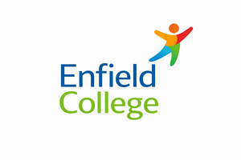

Trade Mark Journal No.2026/005 30 January 2026
UK00004322725 12 January 2026 (41)

- Class 41
- Education; Vocational education; Health education; Pre-school education; Education and training; Academies [education]; Education and instruction; Education services; Services of schools [education]; University education services; Education, teaching and training; Academy services (Education -); Education academy services; Academy education services; Vocational education and training services; Music education; Training and education services; Education and training services; Education and instruction services; Education examination; Kindergarten services [education or entertainment]; Provision of education courses; Educational services for providing courses of education; Career counseling [education]; Teaching of diet education; Higher education services; Provision of training and education; Provision of education and training; Providing of education; Physical education; Entertainment, education and instruction services; Education academy services for teaching languages; Education academy services for teaching art history; Education services relating to vocational training; Medical education services; Computer education training; Education information; Information (Education -); Primary education services; Adult education services; Residential education courses; Computer education training services; Linguistic education and training services; Education and training consultancy; Primary education services relating to literacy; Physical education instruction; Further education; Vocational education relating to home safety; Physical education services; Vocational education relating to self-defence; Sports education services; Education academy services for teaching acting; Musical education services; Physical health education; Legal education services; Technological education services; Providing continuing medical education courses; Lingual education; Online education services; Provision of physical education; Management of education services; Management education services; Education services relating to nutrition; Education services related to the arts; Education services relating to health; Singing education; Dietary education services; Education academy services for teaching construction drafting; Providing continuing dental education courses; Education services relating to religion; Career counselling relating to education and training; Education courses relating to automation; Boarding school education; Vocational education in the field of mechanics; Educational services provided by institutes of higher education; Club education services; Vocational education relating to personal safety; Education and training services in the field of occupational health and safety; Education and training in the field of music and entertainment; Adult education services relating to medicine; Providing continuing nursing education courses; Adult education services relating to finance; Education and training in the field of occupational health and safety; Research in the field of education; Vocational guidance [education or training advice]; Guidance (Vocational -) [education or training advice]; Education information services; Education services for imparting language teaching methods; Sporting education services; Secondary school educational services; Education services relating to medicine; Education, entertainment and sport services; Education services relating to business training; Education courses relating to the travel industry; Educational and teaching services; Training or education services in the field of life coaching; Providing continuing legal education courses; Education services relating to the veterinary profession; Career counselling [training and education advice]; Vocational education relating to first aid; Adult education services relating to law; Blindness prevention education services; Education in the field of computing; Vocational education for young people; Provision of education courses relating to electronics; Education services relating to yoga; Adult education services relating to commerce; Education, entertainment and sports; Education services in the nature of courses at the university level; Education services relating to conservation; Education services relating to music; Education in the field of occupational health and safety; Education services relating to commerce; Career advisory services (education or training advice); Adult education services relating to banking; Provision of education courses relating to telecommunications; English language education services; Education services relating to industry; Education in the field of computing science; Adult education services relating to pharmacy; Education services relating to hygiene; Provision of facilities for education; Provision of education courses relating to computers; Residential education courses relating to archery; Education services relating to the cinema; Educational services provided by institutes of further education; Education in movement awareness; Organization of education competitions; Adult education services relating to management; Education services relating to fashion; Education services relating to sports; Organization of competitions [education or entertainment]; Competitions (Organization of -) [education or entertainment]; Organization of competitions for education or entertainment; Education services relating to photography; Education services relating to banking; Education services relating to pharmacy; Education services relating to food technology; Adult education services relating to auditing; Educational and training services relating to healthcare; Foreign language education services; Education services relating to conservation of the environment; Education and training in the field of business management; Providing education courses relating to the travel industry; Education and training in the field of automotive engineering; Religious education; Education (Religious -).
Enfield College LTD